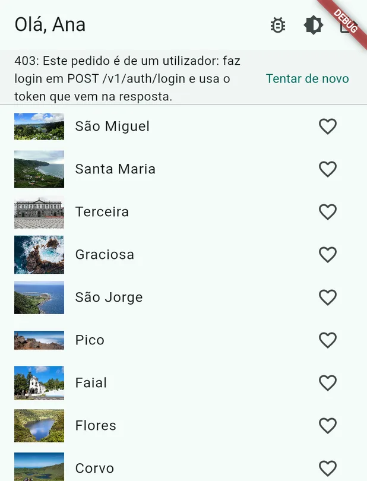
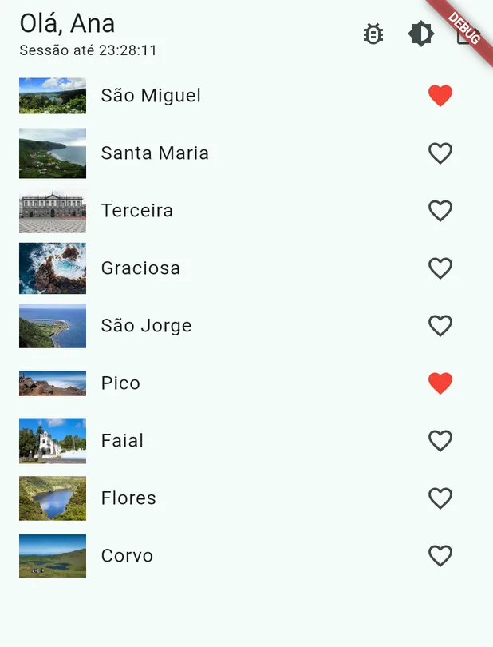

Lesson 17 · Week 8 · Tuesday, 27 October 2026 · 08:30 to 10:30
Token authentication and synced favourites
Theory: authentication on mobile told as a festival: the wristband (access token), the exchange ticket (refresh token) and the doorman (401 and 403), JWT, OAuth2 and biometrics. Games about it. Practice: favourites kept in each person's account, with the right wristband and the wristband swap on a 401.
Repository: pdm-aula-17
By the end of this lesson you can
Explain the access token and the refresh token with the wristband and the exchange ticket.
Tell authentication apart from authorisation, and a 401 from a 403.
Read a JWT and explain what anyone can read and what nobody can fake.
Show the right wristband on every request and swap it on a 401, repeating the request once.
Today's story: the app goes to a festival
The app goes to a festival. The API is the venue, with a doorman at every door.
At the festival
In the app
Ticket office
POST /v1/auth/login, with email and password
Wristband
Access token: goes with every request, lasts 15 minutes
Exchange ticket
Refresh token: lasts 30 days, only used to get a new wristband
Doorman
The API: on every request it looks at the wristband and lets you in or not
Inside pocket
flutter_secure_storage, where the ticket is kept
Authentication vs authorisation; cookies vs tokens
Authentication: who you are (login, biometrics, key). Authorisation: what you can do (read your favourites, not other people's).
401 Unauthorized = I do not know who you are: token missing or expired. 403 Forbidden = I know who you are, but you are not allowed.
On the web: a session stored on the server and a cookie that the browser sends by itself on every request. The typical risk is CSRF.
On mobile: there is no browser managing cookies. The app stores a token and sends it explicitly in Authorization: Bearer ….
A signed token is stateless: the server validates the signature without going to the database. It scales better; revoking is harder.
For the tests: 401 is authentication, 403 is authorisation; on mobile you use Bearer tokens, not cookies.
401 and 403: what the doorman says
401 is authentication (who you are); 403 is authorisation (what you may do).
A 401 is fixed with a new wristband (the ticket, or the ticket office again).
A 403 is not fixed with a new wristband of the same kind: you need another wristband, with other rights.
Question for the class You walk into the artists' backstage with a visitor wristband. 401 or 403?
JWT (1 of 2): what is inside
Three parts in base64url separated by dots: header.payload.signature.
Header:{"alg":"HS256","typ":"JWT"}. Payload: the claims: sub (who), iss (who issued it), iat and exp (when), and each API's own claims.
Signature: HMAC (shared key) or RSA/ECDSA (key pair) over the header and the payload.
Written on the wristband for everyone to see: who, which app, until when. Change the time and the seal breaks.
Claim
Example, in a course API token
What it says
sub, client_id
8b0e6c2a-..., pdm-ab12cd
Which app is asking, and whose it is
uid, user_name
c3a9f1d4-..., Ana
Which person logged in. Only in login tokens
iat, exp
1793094300, 1793095200
When it was issued and when it expires, in seconds: 900 seconds, 15 minutes
Base64 is not encryption: anyone can read the payload. The app can read exp to know it is about to expire without making a request.
For the tests: JWT = header.payload.signature; the payload is readable by everyone, it is not secret.
JWT (2 of 2): signature, expiry and what never goes in it
The signature guarantees integrity: if someone changes the uid to another person's, the signature no longer matches and the server rejects it.
Only the server validates. With HS256 the client does not have the key; with RS256 it could validate with the public key, but it does not need to.
A short exp (15 min to 1 h): a stolen token is worth little time. Without exp it is an eternal token, and that is a security bug.
Never in the JWT: passwords, sensitive personal data, secrets. It travels in plain text, on every request, and ends up in logs.
Real attacks from the past: "alg":"none" accepted by the server, and weak HS256 keys broken by brute force. Current libraries reject both.
For the tests: the signature gives integrity, not confidentiality; you never put sensitive data in a JWT.
Analogy A festival wristband. It says who you are and until when it is valid, and it carries the organiser's signature; any doorman checks it at the door without phoning the ticket office (the server validates the signature without going to the database). Anyone who tries to change the date ruins the signature. And you do not write on it anything you do not want everyone to read: the wristband is in plain sight of everybody.
OAuth2 and OIDC in broad strokes: authorization code + PKCE
The problem: the app wants to access the user's Google calendar without ever knowing the Google password.
OAuth2 is delegated authorisation: the app opens the system browser, the user signs in to Google, Google returns a code through a deep link, and the app exchanges the code for tokens.
PKCE: the app generates a random code_verifier and sends its hash (code_challenge). Only whoever has the verifier can exchange the code. Mandatory in mobile apps, because they have nowhere to keep a client secret.
OIDC = OAuth2 + identity: it also returns an id_token (JWT) that says who the user is. It is "Sign in with Google".
In Flutter: flutter_appauth or each provider's SDK. Always Custom Tabs / ASWebAuthenticationSession, never your own webview (the user should not type the password inside your app).
For the tests: mobile apps do not store passwords or client secrets; they use authorization code with PKCE in the system browser.
Short access token, long refresh token, logout
The access token goes on every request and lasts minutes; the refresh token lives in secure storage and is only used to ask for a new access token.
Access token
Refresh token
Lifetime
Minutes to an hour
Days to months
Use
On every request, as Bearer
Only to ask for a new access token
Where to store
Memory; secure storage if it has to survive a restart
Secure storage, always
If it is stolen
It is worth little time
Serious: revoke on the server
Renewal: on 401, ask for a new access token with the refresh token and repeat the original request once. If the refresh also fails, logout.
Logout: delete both from the device, revoke the refresh token on the server, clear the cache that holds user data. In the course API, POST /v1/auth/logout revokes the refresh token.
For the tests: short access on every request; long refresh in secure storage, only to renew; logout deletes both.
Analogy The access token is the festival wristband: you show it to every doorman and it is valid for a few hours. The refresh token is the ticket you exchange for a new wristband when the old one expires, without going back to the ticket office queue (without a new login). The ticket stays in your inside pocket (secure storage) and is only shown at the exchange desk; losing it is serious, because whoever has it can go and fetch new wristbands.
Biometrics and Sign in with Apple
local_auth: Face ID, Touch ID, fingerprint. It only returns "yes" or "no" to the app. It never talks to the server.
Right use: local unlock. The bank app already has a session (refresh token stored); biometrics decide whether the app can use it now.
Wrong use: "authenticating on the server with biometrics". The server never sees the biometrics; if the refresh token does not exist, biometrics do not create any session.
Sign in with Apple is mandatory on the App Store if the app offers another social login (Google, Facebook). It includes a relay email for those who do not want to give their own.
Passkeys (WebAuthn): the next step. No passwords, a private key on the device, unlocked by biometrics. Already supported on Android and iOS.
For the tests: biometrics unlock locally; authentication on the server is still done by the token.
In the course API: two wristbands
The app has a wristband of its own, with no name. After the login there is a second one, with the person's name.
Visitor wristband (the app's token)
Ana's wristband (the user's token)
Where you get it
POST /v1/auth/token with clientId and clientSecret
POST /v1/auth/login or /v1/auth/register
Lasts
1 hour
15 minutes, swapped with the ticket
Opens
Islands, forecasts, warnings
All of that, plus /v1/me and /v1/me/favorites
5 minutes of memory
Open tiago-rocha.github.io/pdm-aulas/en/aulas/aula-17.html on your computer and come to this slide.
Type your first name and join. You stay in for all the games in the lesson.
Five questions, no notes. Only the first answer counts.
Memory: the class
Game: what does the doorman say?
One request at a time, everyone together. Wait for everyone: we go over each answer together.
Read the request and vote on your own: 200, 401 or 403.
Discuss with the person next to you: why that answer?
Vote again. Only then you see the answer.
What does the doorman say? The class
Game: read the wristband
A real wristband from the course API, already decoded (the middle of the JWT). Four questions.
Game: swapping the wristband
In pairs. First the story in order, then the same in code: it is what you will write in step 2.
Class status
Today, in the app

Starting point. A heart on each island, but the doorman says 403.

After step 2. Favourites stay in the account and the wristband swaps itself.
Show the right wristband: Ana's, if she logged in.
When the wristband expires, swap it with the ticket and repeat the request once.
Getting started: today's repository
git clone https://github.com/Tiago-Rocha/pdm-aula-17.git
cd pdm-aula-17
flutter pub get
Run the app, all on one line (PowerShell does not accept \ to split lines): flutter run -d chrome --dart-define=CLIENT_ID=... --dart-define=CLIENT_SECRET=...
The clientId and clientSecret are the ones in issue #1 of your pdm-miniprojeto, or your group's. They go on the command line, never in the code.
Create an account or log in. Check what you see: above the list, the warning 403: Este pedido é de um utilizador....
You work on the comments TODO 1 and TODO 2. Open a second terminal for the git commands.
1. The right wristband
One rule: "Ana's wristband; if there is none, the visitor's".
String? _token; // the app's token, from clientId and clientSecret
String? userToken; // the logged-in user's token, set by AuthRepository
AuthRepository already keeps Ana's wristband in userToken on every login. But nobody uses it: _request always shows the visitor's.
Step 1: show the right wristband
Future<http.Response> _request(String method, String path) async {
// the user's token when someone is logged in; otherwise, the app's
final token = userToken ?? (_token ??= await _fetchToken());
final request = http.Request(method, Uri.parse('$baseUrl$path'))
..headers['Authorization'] = 'Bearer $token';
final streamed = await request.send().timeout(const Duration(seconds: 10));
return http.Response.fromStream(streamed);
}
Do Replace the TODO 1 line with the two new lines: the comment and the final token. It reads: "Ana's wristband; if there is none, the visitor's".
In the app: the 403 warning goes away. Tap a heart, stop the app with q and run it again: the heart is still red, because it is on the server.
Question for the class Log in with the same account in another browser or on a classmate's phone. Which hearts show up?
2. The wristband expired halfway through the concert
After 15 minutes the wristband expires. The app swaps it at the desk with the ticket and Ana notices nothing.
The ApiClient does not know the SessionNotifier: it gets a function, renewSession, that goes to the desk. main.dart connects it.
The bug button ("Estragar o token") breaks the wristband on purpose, so we don't wait 15 minutes. It only exists in debug.
Step 2 (1 of 2): the ApiClient asks for a new wristband
git stash -u
git checkout passo-1
flutter pub get
// asks for a new user token; main.dart sets it, until then it says no
Future<bool> Function() renewSession = () async => false;
Future<dynamic> _send(String method, String path) async {
var response = await _request(method, path);
// 401: the token expired. Renew the session and repeat, only once.
if (response.statusCode == 401 && await renewSession()) {
response = await _request(method, path);
}
_check(response);
return response.body.isEmpty ? null : jsonDecode(response.body);
}
Do Add the renewSession field and replace the body of _send: it is what you ordered in the game.
Step 2 (2 of 2): the session goes to the desk
/// After a 401: a new access token, from the refresh token.
Future<bool> renew() async {
final current = session;
if (current == null) return false;
try {
session = await _auth.refresh(current.refreshToken);
notifyListeners(); // the session has a new access token
return true;
} catch (_) {
return false; // the request fails with the 401 it got
}
}
api.renewSession = session.renew; // on a 401, the ApiClient asks here
In the app: tap the bug button and then a heart. It works. In step 1, the same tap gave 401: Token inválido.
Where we got to
Where each piece of the story lives in the code.
_request shows Ana's wristband when there is a session, and the visitor's when there is not (step 1).
On a 401, the session swaps the wristband with the ticket and the request is repeated once (step 2).
Branch passo-2 is the final state. ApiClient, FavoritesRepository and FavoritesNotifier go into the group project as they are.
See you tomorrow
Tomorrow
Wednesday, 28 October, 16:00 to 18:00: security, performance and the sprint 1 check-in.
Bring the group's app running.
Today's final state is in branch passo-2: git stash -u and then git checkout passo-2.